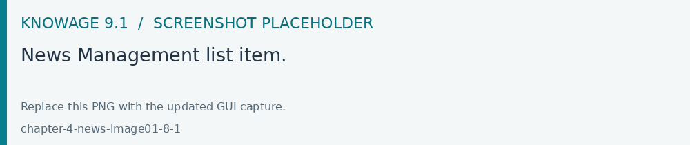
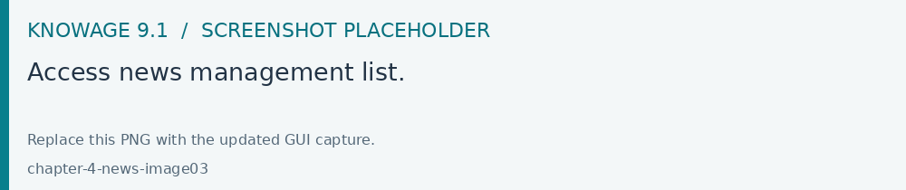
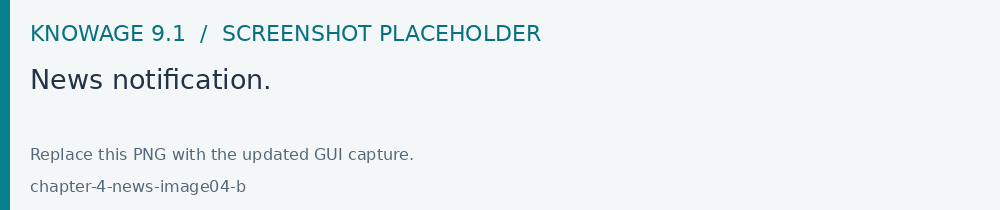
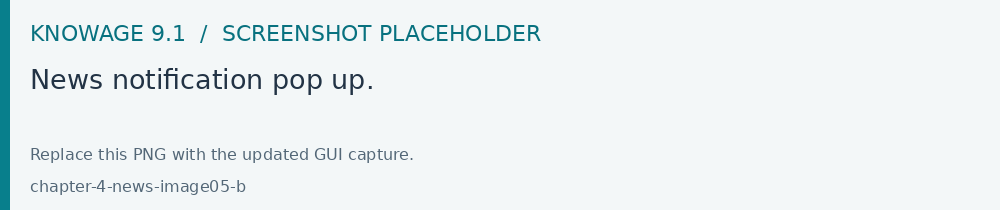

News
Open Modules > Tools > News to create or update platform notices. Set the intended publication period, save and check the notice from the end-user news area.
The News management is a helpful functionality to keep the end user constantly informed on any changements or updates on the Knowage platform. In this section we will describe the main steps to insert a news.
How to publish news
To add a news is mandatory to have administration priviledges. An admin user can insert news entering the News Management functionality from the Knowage main menu.

Fig. 673 News Management list item.
A new page opens where the left side contains the list of all the already inserted news whereas the right side shows the details of the selected news from the list.
Fig. 674 Access news management list.
To add a news, just click the plus icon. Below, the information requested for the addition of a news.
Title
Expiration Date, after this date the news will no longer be visible to the user
Type, three possible values between News, Notification and Warning
Content
Activation
Roles Permissions

Fig. 675 Access news management list.
How reading news
When some news are added, the news icon prompts the number of unread news.

Fig. 676 News notification.
Clicking the icon, the user displays the content of the news.

Fig. 677 News notification pop up.